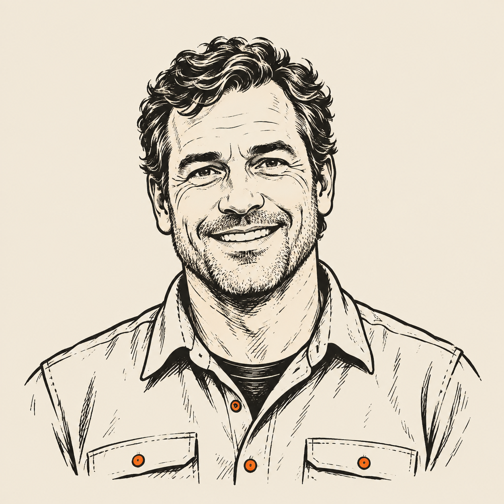

DoorBangers / Meet the people
Meet
the people.
Andrew Corley. Zachary Corley. Al Chang.
The people building DoorBangers.
01 / The people
Andrew
Corley

“I know how to build companies and distribution, and I know great sales organizations are built one relationship at a time.”
Andrew is a repeat founder and sales operator with more than two decades of experience building technology businesses and sales organizations.
He founded, built, and sold Skipity, and previously joined Zugo early, where he led sales and helped grow the business to $100 million in revenue through direct and alternative sales channels. Earlier at AT&T, he learned the job from the ground up: prospecting, listening, solving problems, closing complex deals, and following through after the sale.
Over the last decade, Andrew has focused on applied AI, sales coaching, and customer-facing automation. At DoorBangers, he is building a sales culture designed to compound over time: coachable people, strong relationships, great follow-through, and technology that helps good reps become exceptional.
02 / The people
Zachary
Corley
“I know salespeople because I am one, and I know the best salespeople win by being good with people, and good to people.”
Zach spent more than a decade in enterprise sales, carrying quota, managing complex technical deals, and building the kind of customer relationships that turn into referrals.
At Spectrum, he earned President’s Club recognition by doing what great salespeople actually do: listening well, solving real problems, following through, and becoming someone customers wanted to call again.
He also happens to be an unusually technical salesperson. Earlier in his career he built software products used by more than 420,000 people, and later built a modern CRM and workflow system to unify eight disconnected tools he was working with every day.
At DoorBangers, Zach helps shape both sides of the company: the culture that makes someone great at the door, and the technology that helps them get even better.
03 / The people
Al
Chang
“I build at the frontier. I was doing it long before AI.”
Al is a lifelong engineer and former Director of Software Engineering at Walmart.com who has spent his career going deep on whatever comes next.
Before Walmart, he built high-performance software at Silicon Graphics, worked on games at 3DO, started his career in systems engineering at Wolfram Research, and led engineering organizations as a CTO and VP of Engineering.
Today, that obsession is AI. Al is constantly experimenting with new models, architectures, agents, and tools while they are still bleeding edge, then turning them into things that actually work.
At DoorBangers, he makes sure every rep has technology behind them that is as sophisticated as the sales job in front of them.